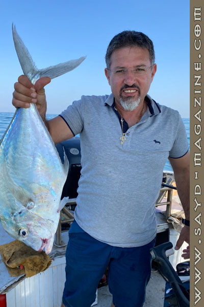

"للبحر عالمه!! في المياه نستمتع بمشاهدة الكائنات البحرية والمرجان والكهوف، أما على سطحه نستمتع بهدوء الأُفق، نسترخي تحت أشعّة الشمس، نُحاكي ضوء القمر ونرقص على صوت أمواجه"...
هكذا يرى جورج تازه "رئيس صفحة "Lebanese fishermen- الصياد اللبناني".

ومِمّا جاء في الحديث:
* بدأتُ أُمارس هذه الهواية منذ أول مشوارٍ لي مع أبي عام 1999.
* مشاكل كثيرة تواجه الصيّاد، كالصيد الجائر الغير القانوني، كوضع السموم في الخبز ورميهم للإمساك بالسمك أو التفجير أو الجرف، جميعها مُخالفات عواقبها كبيرة على الثروة السمكية.
* عدم احترام الصيّاد لقوانين الصيد البحري، سببه عدم المحاسبة وغياب المراقبة وقلّة برامج التوعية من قبل الوزارة المعنية.
* على الدولة مُجتمعة، مسؤولية المراقبة ومنع ردم البحر بالنفايات، لأنه مصدر عيش الكثير من الصيادين.
* الصيد هواية وعمل، ودائم الحاجة إلى التطوّر. وخبرة كل صيّاد تُساهم برفع مستوى هذه الهواية.
* "البحر غدّار".. لكن في قاموسنا هو الصيد والشغف، ولكن هذا لا يمنع الحذر لأجل السلامة.
* توقف مشروع الردم فوق مغارة الفقمة في عمشيت بقرار من وزارة البيئة بعد الشكاوى من النشطاء البيئيين، وبعد استنفارنا السريع، ونَشْرِنا الصور عبر مواقع التواصل الاجتماعي.
* الصبايا يُنافسنَ الرجال في الصيد البحري إذ لديهنَّ الصبر وطول البال.
* يحدث كثيرًا عند سحب الخيط أن تأتي سمكة كبيرة لتفترس السمكة العالقة في الشرك، فتسحب الخيط المملوء بالسنانير، كما يمكن للسمكة وهي تدافع عن حياتها، أن تغدرك، وهذا من مخاطر الصيد.
* نضحك كثيرًا عندما تفلت السمكة من السنّارة داخل المركب بين الأرجل. وأيضًا عندما يقفز السمك ليلًا عند السير بالقارب ويدخل علينا.

* المطلوب: التوعية في المدارس، متابعة أسواق السمك، برامج توعية على وسائل الإعلام، تكثيف الزيارات إلى الموانئ، ومُتابعة مشاكل الصيادين لإشراكهم بالحفاظ على الثروة السمكية.